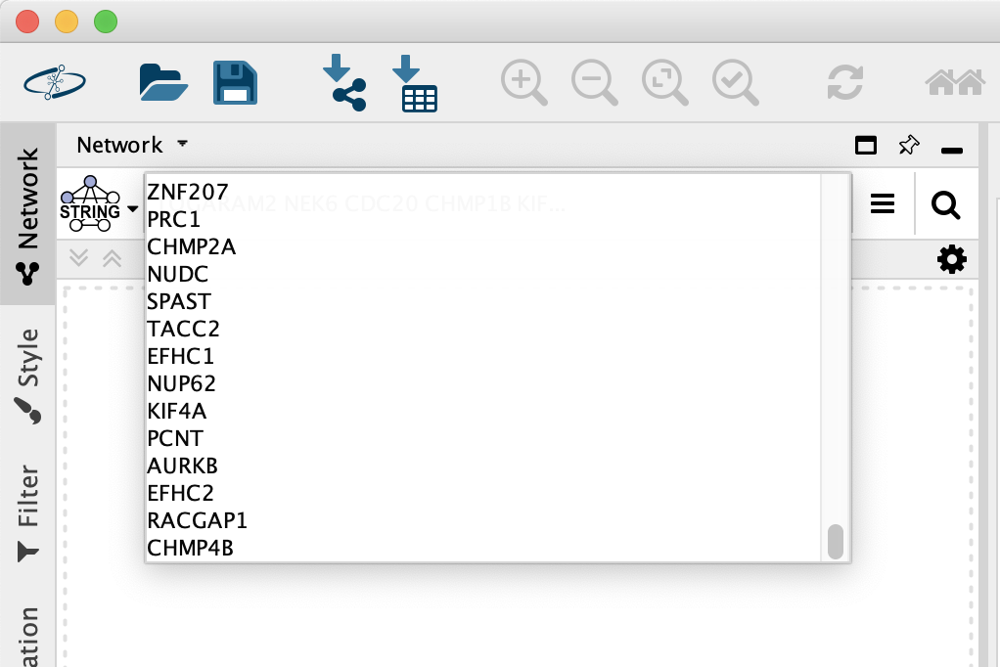
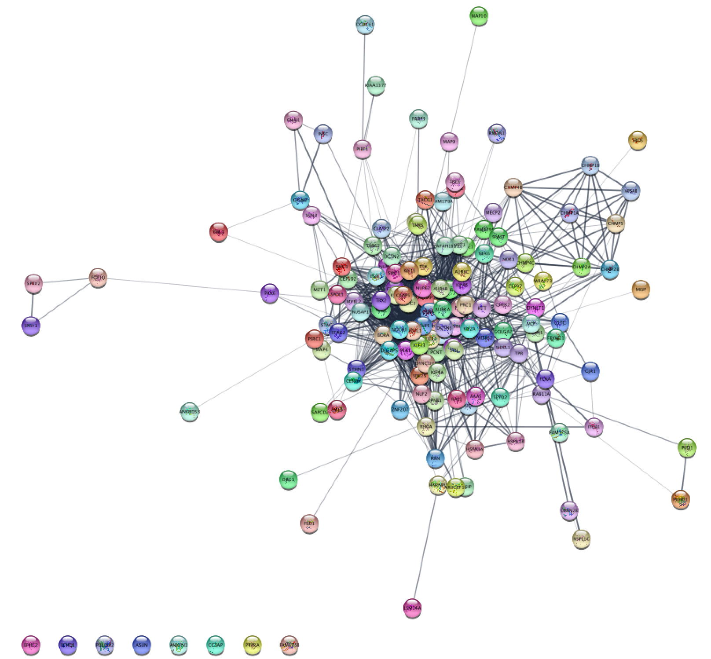

Gene Ontology Term Data Visualization
This protocol includes a basic workflow for visualizing experimental data on a Gene Ontology term of interest in Cytoscape:
- Retrieve genes associated with a GO term
- Retrieving relevant interactions from public databases
- Integration and visualization of experimental data
- Exporting network visualizations

Setup
- Install the stringApp via
Apps → App Manager . - Download the experimental data (follow the link and on the page, right-click and select Save As...).
The data is a lung cancer dataset from TCGA, comparing lung cancer biopses versus normal tissue.
Retrieveing Gene Ontology Term Genes
From enrichment analysis, we know that some Gene Ontology Biological Process terms are enriched in this data. We will choose one of these terms for visualization, GO:1902850; microtubule cytoskeleton organization involved in mitosis.
- Go to AmiGO and search for GO:1902850 using the Quick search field.
- On the results page, click the link for genes and gene products. This is showing associated genes for all organisms.
- On the left side, click Organism to expand and then click the green plus sign next to Homo sapiens. At the top of the gene list, the number of Total gene products should now be around 148.
- Click the Custom DL button. In the popup, drag the top entry, Gene/product (bioentity), to the left, to exclude it from the download. Click Download.
- On the page that opens, select and copy the list of gene symbols. It is also a good idea to save the list by pasting it into any text editor.
Retrieve Interactions from STRING
We can now use the list of gene symbols for the GO term to search the STRING database.
- Launch Cytoscape. In the
Network Search bar at the top of theNetwork Panel , selectSTRING protein query from the drop-down, and paste in the list genes. - Open the options panel
 and confirm you are searching Homo sapiens with a Confidence cutoff of 0.40 and 0 Maximum additional interactors.
and confirm you are searching Homo sapiens with a Confidence cutoff of 0.40 and 0 Maximum additional interactors. - Click the search icon
 to search. If any of the search terms are ambiguous, a
to search. If any of the search terms are ambiguous, a Resolve Ambiguous Terms dialog will appear. ClickImport to continue with the import using the default choices. The resulting network will load automatically.

STRING GO Term Network
The resulting network represents genes associated with the GO term, recognized by STRING, and interactions between them with an confidence score of 0.4 or greater.
Data Integration
Next we will import the data to create a visualization.
- Load the downloaded lung.expr.csv file under
File menu by selectingImport → Table from File.... . Alternatively, drag and drop the data file directly onto theNode Table . - Select the display column as the Key column for Network and select the GeneName column as the key column by clicking on the header and selecting the key symbol.
- Click
OK to import. Two new columns of data will be added to theNode Table .
Visualization
Next, we will create a visualization of the imported data on the network. For more detailed information on data visualization, see the Visualizing Data tutorial.
- Go to the
STRING Results Panel to the right of the network and uncheck Glass ball effect and STRING style colors. This will make the nodes - Set the default
Border Width to 2, and make the defaultBorder Paint dark gray. - Set the default node Label Font Size to 14.
Visualization
- For node
Fill Color , create a continuous mapping forLog2FC . - Save your new visualization under
Copy Style... in theOptions menu of theStyle interface, and name it de genes up.
Exporting Networks
Cytoscape provides a number of ways to export results and visualizations:
- As an image:
File → Export → Network to Image... - To NDEx: Click the NDEx button in the toolbar and select
Export Network to NDEx . Alternatively, selectFile → Export → Network to NDEx , orFile → Export → Collection to NDEx - As a Cytoscape JSON file:
File → Export → Network to File and select Cytoscape.js JSON as the format.